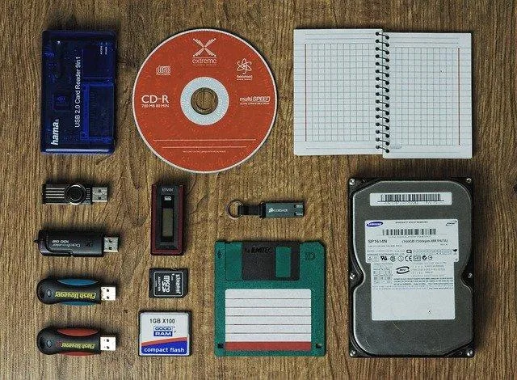

We believe security software like Kicksecure needs to remain Open Source and independent. Would you help sustain and grow the project? Learn more about our 14 year success story and maybe DONATE!
Backup VMsAdvanced DocumentationDev/Build DocumentationPrevious page: Backup VMsIndex page: Advanced DocumentationNext page: Dev/Build DocumentationFull Raw Disk Backup

1 to 1 disk backup
Introduction
A full raw disk backup is a sector-by-sector copy of an entire storage device.
It copies every byte of the disk exactly as it exists at the block device level, including:
- the partition table (MBR or GPT),
- all partitions,
- filesystems,
- bootloader data,
- unused space,
- and all metadata.
This is also called a 1 to 1 clone because the destination disk becomes an exact binary copy of the source disk.
Unlike file-based backups, a full raw disk backup does not interpret files. It does not analyze directories, permissions, or mounted filesystems. Instead, it reads raw blocks from the source device and writes them directly to the destination device. As a result, deleted data, empty space, and all low-level structures are copied as well.
Because everything is copied exactly, the result can be bootable, provided that:
- the target disk is the same size or larger than the source disk, and
- disk identifiers do not conflict if both disks are connected at the same time.
It is not possible to backup an operating system installed on an internal disk such as for example Qubes OS while that operating system is running from that disk. This is because the disk is in active use and continuously changing. Therefore, a raw backup must be performed from a different operating system, typically booted from an external USB drive.
The advantage of a full raw disk backup is that it should be bootable either by:
- disconnecting the internal disk and booting from the external backup disk, OR
- changing the disk identifiers (undocumented) (of either the internal disk or external disk after the backup), OR
- using a different computer with compatible hardware to boot from the external disk.
Unfortunately without either above method any attempt to boot the external drive after the backup might likely lead to actually boot the internal drive because these share the same disk identifiers after the raw disk backup.
Clarification: what "disk identifiers" means
A full raw disk backup is a 1 to 1 clone. It copies all bytes, including identifiers that are normally expected to be unique.
Depending on disk partitioning and boot method, these identifiers can include (non-exhaustive list):
- GPT disk GUID (also known as "disk UUID")
- GPT partition GUIDs
- filesystem UUIDs (for example ext4 UUID)
PARTUUIDvalues- bootloader and EFI related identifiers and boot entries (depending on setup)
If both original disk and the raw clone are connected at boot time, the firmware or bootloader might pick the wrong disk, because both disks can look identical by these identifiers.
Prerequisite Knowledge
- How to install an operating system (Debian) on an external USB drive.
Prerequisite Exercises
echo Output Redirection Essentials
This should be exercised in a safe environment such as in a disposable VM.
1 Learn the syntax.
Do not run the following command.
>- the greater-than sign - means the output file to write to.- echo "input content" > path-to-file-name
2 Exercise the redirect to file redirection.
echo "test output" > test-output-file
3 View the created file.
cat test-output-file
4 Sample printout.
test output5 Exercise more.
Based on above example, keep changing the file content and output file names until this becomes clear.
PipeViewer Read-Only Essentials
This should be exercised in a safe environment such as in a disposable VM.
1 Create a new file such as for example:
Open file file-input in a text editor of your choice as a regular, non-root
user.
If you are using a graphical environment, run. featherpad file-input
If you are using a terminal, run. nano file-input
2 Add some contents such as for example:
test input
3 Save and close the file.
4 Learn the syntax.
Do not run the following command.
<- the less-than sign - means the input file to read from.- pv < path-to-file-name-to-read-from
5 Test reading from the file.
pv < file-input
6 Read the output.
Sample output.
test input
11.0 B 0:00:00 [34.9KiB/s] [================================================================>] 100%7 Exercise more.
Based on above example, keep changing the input file names until this becomes clear.
PipeViewer Read-Write Essentials
This should be exercised in a safe environment such as in a disposable VM.
1 Create a new file such as for example:
Open file file-input in a text editor of your choice as a regular, non-root
user.
If you are using a graphical environment, run. featherpad file-input
If you are using a terminal, run. nano file-input
2 Add some contents such as for example:
test input
3 Save and close the file.
4 Learn the syntax.
Do not run the following command.
<- the less-than sign - means the input file to read from.>- the greater-than sign - means the output file to write to.- pv < path-to-file-name-to-read-from > path-to-file-name-to-write-to
5 Test reading from an input file and redirecting the output to another output file.
pv < file-input > file-output
6 Read the output.
Sample output.
11.0 B 0:00:00 [ 149KiB/s] [================================================================>] 100%7 Compare the files.
View the two different files. These should look the same.
cat file-input
cat file-output
8 Exercise more.
Based on above example, keep changing the input files and output files until this becomes clear.
Prerequisites
- An installed operating system (such as for example Qubes OS) on an (internal) disk.
- An operating system installed on an external disk, most likely USB such as for example Debian.
- A separate external backup disk where the backup should be stored.
Information Gathering
Qubes Users Recommendations
For educational purposes, it is useful to run gparted and gnome-disks from the Qubes installation which should be backed up as full raw disk backup.
Tested in Qubes R4.0 only. In later Qubes versions with untrusted storage domain, these instructions might need changes.
gparted is a disk partitioning tool which will be used as an easy way to find out how many hard drives the system has and what size they have. gnome-disks is a similar utility.
Disconnect any unneeded storage devices.
1 In dom0, install gparted and gnome-disks.
sudo qubes-dom0-update gparted gnome-disk-utility
2 In dom0, run gparted.
sudo --set-home gparted
Check the arrow down button below the X (which would
close the window) if there are multiple disks. Use the drop-down
selector to switch between disks and observe their device paths and
sizes.
3 In dom0, run gnome-disks.
gnome-disks
Again, review all listed disks and observe their device paths and sizes.
4 Make notes.
Write the observed information either:
- into a text file (for example using a simple text editor), OR
- on paper using pen and paper.
The goal is to have a clear and persistent record of:
- the device path (for example
/dev/nvme0n1), and - the disk size (for example 476.91 GiB).
Example notes.
Note: Modify these notes according to what can be seen in gparted and gnome-disks on your system.
Internal Qubes disk:
/dev/nvme0n1 (476.91 GiB)
No other internal disks detected.5 Done.
Disk device paths and sizes have been recorded for later reference.
Obviously easiest if there is only 1 disk. Assuming there is only 1 disk.
Recommendations
1 Exercise with completely different test hardware.
It is recommended against applying this procedure with production hardware if doing this procedure for the first time.
Since data loss is possible if making a mistake during the raw disk backup procedure, it is recommended to exercise the procedure with completely different hardware. Such as a second computer as well as an external boot drive and backup disk that does not contain any important data.
2 Creating a backup date note file.
After booting from the internal disk (which should be backed up).
Create a text file with a small explanation for yourself "Today is day x with date y and time z prior backup number 1."
This will later be handy when doing a restoration test.
3 USB boot operating system should have a graphical diff viewer such as meld installed as well as the following tools.
After booting the operating system from USB.
Install package(s)
meld lxqt-sudo gnome-disk-utility gsmartcontrol gparted pv lshw hwinfo ddrescue
following these instructions:
1 Platform specific notice.
- Kicksecure: No special notice.
- Kicksecure-Qubes: In Template.
2 Update the package lists and upgrade the system.
sudo apt update && sudo apt full-upgrade
3
Install the
meld lxqt-sudo gnome-disk-utility gsmartcontrol gparted pv lshw hwinfo ddrescue
package(s).
Using apt command line --no-install-recommends option is in
most cases optional.
sudo apt install --no-install-recommends meld lxqt-sudo gnome-disk-utility gsmartcontrol gparted pv lshw hwinfo ddrescue
4 Platform specific notice.
- Kicksecure: No special notice.
- Kicksecure-Qubes: Shut down Template and restart App Qubes based on it as per Qubes Template Modification.
5 Done.
The procedure of installing package(s)
meld lxqt-sudo gnome-disk-utility gsmartcontrol gparted pv lshw hwinfo ddrescue
is complete.
Backup High Level Overview
1 Boot from external USB drive.
2 Find out the device paths of the internal drive and the USB boot drive.
3 Find out the device path of the USB backup drive.
4
Use pv to read from the internal drive and to write to the
USB backup drive.
5 Restoration test. (Optional but highly recommended.)
Backup Instructions
In Linux, unfortunately device names and device paths are non-deterministic, unpredictable, might change with kernel versions and operating system upgrades.
A raw backup with the pv can lead to data loss if used
incorrectly as pv is a very powerful tool.
For example, sda is a
device name and /dev/sda is a
device path. Other device path examples are
/dev/sdb,
/dev/sdc.
The actual pv command is not very difficult but the
device paths need to be carefully determined before starting the backup,
otherwise data loss is at risk.
Backup target disk size requirement
pv /dev/nvme0n1 --output /dev/sdb
The target device (backup disk) must be the same size or larger than the source device (the disk being backed up). If the target device is smaller, the backup will fail part-way through and the target disk will already be overwritten and unusable.
1 Boot from external USB disk.
2 Do not attach any other disks at this time.
If any other disks are already attached, remove them for now for simplicity.
3 Write output of fdisk to file "old".
sudo fdisk -l > old
Note: This writes the file old into the current
working directory as the current user. This is OK.
4 Information gathering with a few hard drive utilities.
Using lshw.
sudo lshw -class disk
Using hwinfo.
sudo hwinfo --disk
See what disks are currently attached with an alternative tool such
as gnome-disks as well.
Try:
gnome-disks
Try gsmartcontrol.
gsmartcontrol-root
See what disks are currently attached with an alternative tool such
as gparted as well.
Try:
- Start
gpartedfrom start menu if it can be found there. - Try with pkexec if that works: /usr/sbin/gparted
- Or try with lxsudo if that works: lxsudo /usr/sbin/gparted
5 Attach another disk, the external USB disk which should be used for the backup.
6 Write output of disk to file "new".
sudo fdisk -l > new
7 Compare file "old" with file "new" using "diff".
diff old new
8 Compare file "old" with file "new" using "meld".
meld old new
9
View contents of file /etc/fstab.
cat /etc/fstab
Example printout.
# /etc/fstab: static file system information.
#
# Use 'blkid' to print the universally unique identifier for a
# device; this may be used with UUID= as a more robust way to name devices
# that works even if disks are added and removed. See fstab(5).
#
# <file system> <mount point> <type> <options> <dump> <pass>
/dev/mapper/debian--vg-root / ext4 errors=remount-ro 0 1
# /boot was on /dev/sda1 during installation
UUID=86983f37-38db-401f-889a-bc93d83a3be4 /boot ext2 defaults 0 2
#/dev/mapper/debian--vg-swap_1 none swap sw 0 0Watch out for the UUID= field. In above example it is
86983f37-38db-401f-889a-bc93d83a3be4.
10
View output of the blkid.
For informational purposes only.
sudo blkid
11 Confirm the device path of the boot device.
Compare output of file /etc/fstab with
blkid command.
For example.
Note: replace UUID with the actual
UUID from /etc/fstab.
sudo blkid | grep 86983f37-38db-401f-889a-bc93d83a3be4
Sample printout.
/dev/sda1: UUID="86983f37-38db-401f-889a-bc93d83a3be4" TYPE="ext2" PARTUUID="decf0fe9-01"In above example, the device path of the boot disk is
/dev/sda. Not
/dev/sda1.
The 1 means partition number 1. When making
raw disk backups of the full disk, partition numbers must be omitted.
Otherwise it would just be a partition backup. In this case, the backup
would be unbootable and couldn't be easily restored.
Note: The /etc/fstab and blkid check
can identify a partition on the boot disk (for example
/dev/sda1). This is a hint for the whole-disk path (for
example /dev/sda). This should be cross-checked with the
earlier disk discovery steps (for example fdisk -l old
versus new, and disk size checks) to avoid mistakes.
12 Make some notes such as.
Qubes internal disk 476.91 GiB
Debian external boot disk 931.42 GiB
Backup external disk 931.41 GiB13 Note the device paths.
Write down the device paths of the internal disk, the external USB boot disk and the external USB backup disk with help according the above instructions.
Example only.
For this example, /dev/nvme0n1 is the (Qubes) internal
disk, /dev/sda the (Debian)
USB boot disk and /dev/sdb
the USB backup drive. This might be different for readers!
14 Note that device paths can change after reboot.
Note that device paths are unfortunately unstable. It happened to the author of this wiki page that paths were swapped. It is therefore required to re-identify device paths every time the computer is rebooted.
15 Become root. [1]
sudo su
16 Backup.
Explanation:
<- the less-than sign - means the input device to read from>- the greater-than sign - means the output device to write to.
Syntax:
pv < /dev/xxx > /dev/yyy
Note:
- Replace
/dev/xxxwith the actual device path of the drive which should be backed up. - Replace
/dev/yyywith the actual device path of the drive where the backup should be stored. - The target device must be the same size or larger than the source device.
Examples:
Notice: DATA LOSS POSSIBLE if used incorrectly! Do not use this without prior verification of the device paths!
pv < /dev/nvme0n1 > /dev/sdb
pv < /dev/sda > /dev/sdb
The backup might take a long time.
17 Check exit code.
echo $?
Expected output if success.
018 Switch back to normal user.
If the user was previously running sudo su, it should
now be undone. Switch back to normal user by running the following
command.
exit
19 Done.
Backup is complete.
20 Restoration test.
Without restoration test, it's unclear if the backup could be restored in case needed.
Backup Verification
verification without progress meter
size=$(sudo blockdev --getsize64 /dev/nvme0n1)
sudo cmp --bytes=$size /dev/nvme0n1 /dev/sdb
verification with progress meter
Small script with progress meter. Untested.
original_disk and backup_disk need to be
adjusted.
#!/bin/bash
set -x set -e set -o pipefail
original_disk=/dev/nvme0n1 backup_disk=/dev/sdb
test -e "$original_disk" test -e "$backup_disk"
- Get the size of the original disk in bytes.
original_size=$(blockdev --getsize64 "$original_disk")
- Compare the first "$original_size" bytes of the backup against the original.
- This avoids confusion if the backup disk is larger than the original disk.
- Exit codes:
- * 0 means identical
- * 1 means mismatch (in this context: backup issue)
- * greater than 1 means error (read error, permission issue, missing device, etc.)
pv "$original_disk" | cmp --bytes="$original_size" /dev/stdin "$backup_disk"
- Alternative. Untested.
- ddrescue --verbose --no-scrape --size="$original_size" "$original_disk" "$backup_disk" ~/logfile
Restoration Test High Level Overview
Before a restoration test can be performed, a backup is required. Once a backup has been created, attempt the following restoration test instructions.
1 Boot from internal drive.
2 Create a (or update) a backup date note file.
Create a text file with a small explanation for yourself "This is prior restoration test. The current date is replace-actual-date. The current time is actual-time. This note should no longer exist after the restoration test."
3 Shut down.
4 Boot from external USB drive.
5 Find out the device paths of the internal drive and the USB boot drive.
6 Find out the device path of the USB backup drive.
7
Use pv to read from the USB backup drive and to write to
the internal drive. (Vice versa backup procedure.)
8 Shut down.
9 Boot from internal disk to test if the restoration was successful.
10 Check the backup date note file which was created in step 2.
The note "This is prior restoration test." is now expected to be gone. If the note still exists, then restoration has not been successful. Make sure step 2, the update of the backup date note file has not been previously skipped.
11 Done.
Restoration test has been completed.
Restoration Example
1 Become root.
sudo su
2 Determine the destination disk size.
size=$(blockdev --getsize64 /dev/nvme0n1)
3
Select either pv or ddrescue.
pv
1 Notes.
NOTICE: DATA LOSS POSSIBLE!
Note: Modify for your needs. See above.
Explanation:
This restoration example copies raw bytes from the backup disk to the internal disk.
The variable $size is set to the size (in bytes) of the
destination disk (/dev/nvme0n1).
The pv options --size (-s) and
--stop-at-size (-S) ensure that
pv reads at most $size bytes from the input
disk. This prevents reading more bytes than the destination disk size in
case the backup disk is larger.
2 Restore.
pv --stop-at-size --size "$size" /dev/sdb > /dev/nvme0n1
Note:
If the backup disk (/dev/sdb) is smaller than the
destination disk (/dev/nvme0n1), then the restore will fail
early and will result in an incomplete restore.
3 Done.
Raw restoration procedure has completed (if no errors occurred).
ddrescue
1 Notes.
WARNING: UNTESTED!
NOTICE: DATA LOSS POSSIBLE!
Note: Modify for your needs.
Explanation:
The ddrescue option --size="$size" limits
how many bytes are read from the input disk (/dev/sdb).
This ensures that at most the destination disk size is restored, even if
the backup disk is larger.
If the backup disk is smaller than the destination disk, the restore will fail early and will result in an incomplete restore.
2 Restore.
ddrescue --force --size="$size" /dev/sdb /dev/nvme0n1 ~/restore.log
3 Done.
Raw restoration procedure has completed (if no errors occurred).
Qubes Specific
Alternatives
Potential alternatives, untested by the author of this wiki page.
TecMint: Linux disk cloning tools
Footnotes
- Using sudo is unfortunately not possible. At least not without
complicating the following
pvcommand. Becoming root is required because shell redirection are a bash feature, not a sudo feature. These are set up before becoming sudo. Alternatively, it would be possible to write a small script, pasting the command there and executing that script using sudo. - * Unix
StackExchange discussion: SSD backup image * It is unfortunately not
possible to compare. Running
diff /dev/sda /dev/sdbfor backup verification is not possible because of different disk sizes.
Categories: Documentation